|
|
PERSONAGEM
HOMENAGEADA
Desauda Bosco da Costa Pinto
|
|
|
|
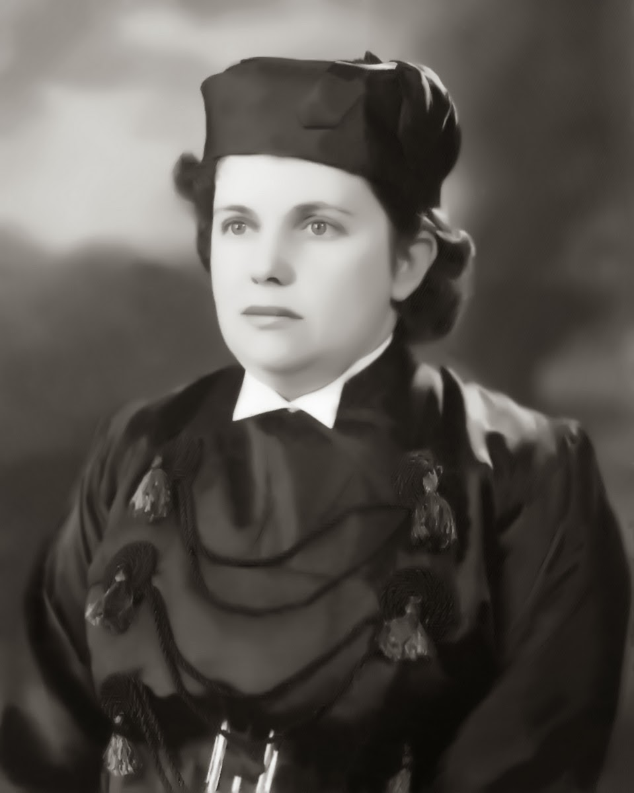
>>Clique na imagem
para ver as suas obras<<
|
DESAUDA BOSCO DA COSTA PINTO
Professora, Desenhista, Artista Plástica, Teatróloga
1919 - 07 de março: Nasce em Praia da Saudade - Florianópolis-SC.
Filha de Henrique Bosco e Semiramis Bosco.
JUSTIFICATIVA AO ANTEPROJETO DE LEI Nº 798/83
Senhor Presidente,
Senhores Vereadores:
Desauda Bosco da Costa Pinto, nasceu na Praia Grande, em Florianópolis, Santa Catarina, em 07 de março de 1919.
A filha de Henrique Bosco e Semiramis Bosco, desde a mais tenra infância, demonstrava aptidão para o magistério, carreira que abraçou com muito amor e dedicação. fazendo nela o seu sacerdócio. Casada com o morretense Marte Brambilla da Costa Pinto de cuja união nasceram duas filhas: Maria Teresa e Yana Yara.
Em 04 de março de 1950, a professora Desauda foi transferida para Morretes e aqui chegando, logo foi demonstrando a sua imensurável capacidade de trabalho, dedicação e amos às crianças, às causas do ensino e, sobretudo, às artes. Sua primeira turma, no então "Grupo Escolar Miguel Schleder", foi o jardim de Infância, onde revelando os seus pendores artísticos na pintura, decorou toda a sala de aula, com painéis maravilhosos, incentivando as crianças à criatividade, não só nas artes plásticas como também nas artes dramáticas.
Formada em Geografia, logo foi convidada pelo então Ginásio Municipal Rocha Pombo, para ministrar aulas, sendo uma das primeiras mestras. Possuidora de um vasto cabedal de conhecimentos, a todos surpreendia pela sua inteligência e abnegação ao ensino. Espírito irrequieto, alegre e empreendedor, logo angariou a amizade de todos.
Foi a fundadora do teatro estudantil em Morretes, e autora de várias peças inesquecíveis. Incentivou a juventude desta terra, criando um verdadeiro elenco teatral, oportunizando apresentações maravilhosas, não só aqui, como também em outros municípios.
Foi também a fundadora da Fanfarra Escolar, a cujo mister se dedicou de corpo e alma, encetando campanhas para a aquisição de instrumentos (teatros, gincanas, shows, livro de ouro e outros), envolvendo toda a comunidade. O brilho e o garbo da Fanfarra da Profª Desauda, foi reconhecido quando de suas apresentações, dentro e fora deste município.
Foi a abnegada lutadora pela criação de uma Escola Normal em Morretes não medindo esforços na busca de sua concretização, e, a 1º de maio de 1956, é criada em Morretes, a "Escola Normal Colegial Silveira Neto de Morretes, sendo a Profª Desauda a sua fundadora e mantenedora.
Na Escola Normal criou a Escolinha de Artes, na qual muitos alunos se revelaram, dando vazão à criatividade nata.
Dotada de um espírito caridoso e humanitário, criou aqui várias Campanhas Filantrópicas (do agasalho, da cadeira de rodas, da alimentação), transmitindo aos seus alunos a mais bela e humanitária lição de AMOR AO PRÓXIMO.
Nas datas históricas nacionais e municipais era a organizadora dos desfiles escolares, cuja beleza, criatividade e cultura, transpareciam nos carros alegóricos, relembrando os feitos dos filhos notáveis, as belezas e as tradições de nossa terra.
E, aos filhos desta Morretes, a quem ela tanto amou, cabe, neste momento, prestar-lhe uma justa homenagem, dando o seu honrado nome à nova Escola Consolidada, deste Município: "Escola Consolidada Professora Desauda Bosco da Costa Pinto".
Morretes, 08 de junho de 1983.
Vereador Mauro Gilberto dos Santos
|
|
|
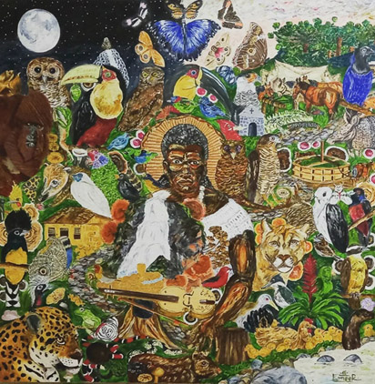
(Pintura ilustrativa realizada pelo
Artista Plástico Emersom Ramos)
|
ANHAIA
Ama de Leite
0000 - 00 de MÊS: Nasce em...
Filha de...
Nos arredores de Morretes, antigamente haviam muitos engenhos. Uns de grande porte outros menores. A maioria era composto com a Casa Grande (onde os senhores moravam) mais a Senzala (onde os escravos eram trancados á noite) e mais depósitos e estribarias.
Numa dessas Casas Grandes, trabalhava uma escrava. Uma escrava bonita, robusta, muito boa para os patrões.
Como de costume, todas, ou senão a maioria das crianças que nasciam nas Casas Grandes, eram amamentadas pelas escravas e nessa não era diferente.Esta escrava amamentada e zelava pelo bem estar das crianças.
Depois de muito tempo dedicando todo o seu afeto e empenho, seus patrões, como forma de gratidão, deram-lhe um presente. Uma casa muito bonita, com empregados, a alguns quilômetros acima.
O nome desta escrava era Anhaia.
O local onde Anhaia ganhou a casa e foi passar o resto de sua vida, ficou conhecido como Mundo Novo do Anhaia, pois para ela, era como se tivesse recebendo um mundo novo.
Postado por Raízes e Memórias - Morretes 09:11 |
|
|
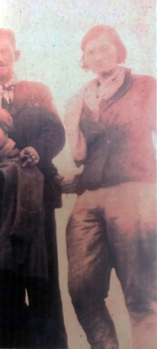
>>Clique na imagem
para ver as suas obras<<
|
ELISA FRANÇA
Professora
1918 - 00 de MÊS: Nasce em Morretes - PR.
Filha de...
Foi a primeira morretense a subir o pico do marumbi, se criou em morretes era professora, e faleceu prematuramente com 21 anos.
|
|
|

>>Clique na imagem
para ver as suas obras<<
|
HELMOSA SALOMÃO RICHTER
Professora de Português e de Inglês, Historiadora e Pesquisadora da história de Morretes
1932 - 24 de dezembro: Nasce em Antonina - PR.
Filha de João Massad e Julith Name Salomão, oriundos do Líbano e de saudosas memórias.
Fez seus primeiros estudos na Escola Estadual Brasílio Machado, em Antonina.
Aos doze anos de idade, mudou-se par Morretes com seus familiares, quando então começou a trabalhar na Loja Vencedora, de propriedade do saudoso Brasilio Carlos Jorge Buffara, saindo para casar aos 16 anos, com Oscar Richter, com o qual teve 4 filhos, que lhe deram 11 netos: Julimari (falecida aos 8 meses de idade), Neide Eliane Richter, Nancy Elizabeth Richter de Rocco e Oscar Roberto Richter (falecido).
Concluiu o 2º Grau (Magistério e Contabilidade), respectivamente em 1965 e 1968. Em 1969 ingressou na Faculdade Estadual de Filosofia Ciências e Letras de Paranaguá, onde concluiu o Curso de Letras Anglo-Portuguesa, em 1972.
Iniciou sua carreira no Magistério Estadual em 1960, dando aula na zona rural, na localidade de Esperança. Depois na Escola Miguel Schleder e por último no Colégio Estadual Rocha Pombo, de onde aposentou-se em 1992, ministrando aulas de Português e de Inglês.
Faleceu em 5 de abril de 1999.
Saiba mais...
|
|
|
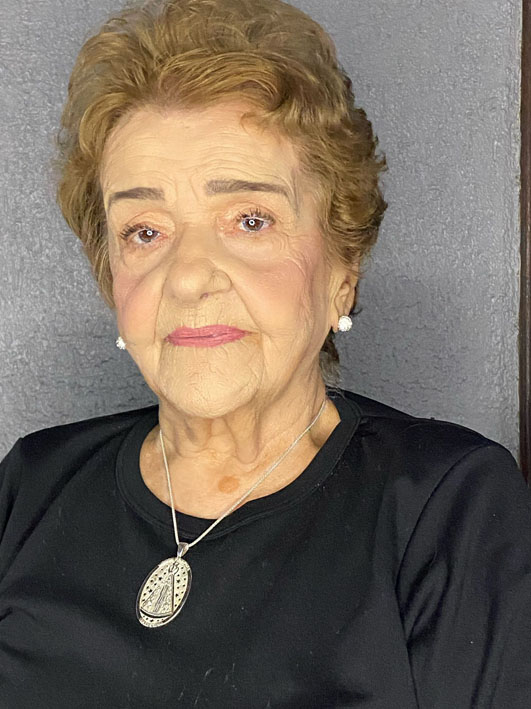
>>Clique na imagem
para ver as suas obras<<
|
LAURICE SALOMÃO DE BONA
Professora de Português, Francês e Literatura
1936 - 23 de abril: Nasce em Antonina - PR.
Filha de João Massad e Julith Name Salomão, oriundos do Líbano e de saudosas memórias..
Iniciou seus estudos na Escola Estadual Brasilio Machado, até o 2º ano primário, quando então sua família mudou-se para Morretes, em 1945, vindo transferida para a Escola de Aplicação Miguel Schleder, onde concluiu o 5º ano.
Em 1949, após fazer o exame de admissão, matriculou-se no Ginásio Municipal, fazendo parte da turma fundadora. Por motivo de saúde (pneumonia), e quase no final do ano, teve que desistir de estudar, porque naquela época por mais que o aluno tirasse a nota máxima, era obrigado a fazer exame oral e escrito. No ano seguinte, não quis voltar a estudar, pois sentia vergonha porque seus colegas haviam passado para o 2°ano. Preferiu então trabalhar no comércio como balconista, profissão esta que exerceu durante cinco anos.
Após dez anos, em 1959, já casada e com filho pequeno, voltou a estudar no Colégio Estadual Rocha Pombo, concluindo o 1º grau em 1962. No ano seguinte prestou vestibular e ingressou na Escola Normal Colegial Silveira Neto, concluindo e recebendo em 1965, o Diploma de Professora Primária.
Em 1969, ingressou na Faculdade de Filosofia Ciências e Letras de Paranaguá, no Curso de Letras Franco-Portuguesas. Em 1972, concluiu o Curso Superior, ficando habilitada a lecionar Português, Francês e Literatura.
Iniciou sua carreira no magistério em marco de 1958, sendo nomeada pelo Governo de Estado para lecionar na localidade de América de Baixo, depois Porto de Cima, Santa Fé, Escola Miguel Schleder e por último Colégio Estadual Rocha Pombo.
Participou de três concursos do magistério estadual nos anos de 1978,1979 e 1990, com muito êxito.
Foi professora de Português, Francês e Literatura Brasileira, Supervisora da Merenda Escolar Estadual, Coordenadora de Língua Portuguesa, Supervisora de Ensino e Diretora do Colégio Estadual Rocha Pombo.
Assumiu a Direção do Colégio em 13 de maio de 1985, por indicação política. No mesmo ano concorreu a eleição para a direção e obteve uma votação significante, quase que total por parte da comunidade. Permaneceu no cargo até 1987. Não podendo mais candidatar-se, voltou no ano seguinte para a sala de aula, lugar onde ela sempre se sentiu bem.
Durante a sua gestão como Diretora, o Colégio participou ativamente de todas as festividades cívicas e religiosas do nosso município. Durante três anos o Colégio coordenou e trabalhou nos enfeites de rua para a Festa de Corpus Christi, na Festa Feira era responsável pela ornamentação do Portal e realizou neste período desfiles maravilhosos por ocasião do Aniversário de nossa cidade. Além de organizar o desfile junto com todos os professores, a professora Laurice apresentava o desfile de todas as escolas. A professora Laurice foi quem adquiriu a 1ª televisão para o Colégio, além de vários materiais para a cantina e dependências do Colégio.
Casou-se em 1953 com Polydoro De Bona com quem tem 05 filhos, 08 netos e 09 bisnetos.
Esposa dedicada, mãe, avó e bisavó amorosa, professora amiga e amável, sempre ensinando a todos com sabedoria, bondade e muita compreensão, fez de seu trabalho um verdadeiro apostolado, pois em trinta e oito anos e meio de trabalho dedicados a educação em nosso município, nunca iniciou uma aula sem antes proferir uma oração, procurando despertar nos corações dos educandos, a fé e a confiança, no Todo-Poderoso.
Aposentou-se como professora em 1996, foi catequista até 2001, quando então foi convidada pelo Prefeito Helder a trabalhar na Secretaria de Cultura e Esportes, ocupando o cargo de Diretora Geral de 2001 à 2008, posteriormente voltou a ser Diretora da Cultura, entre os anos de 2013 a 2015. Em ambas as gestões desempenhou um trabalho extraordinário de pesquisa histórica, atendendo todos que a procuravam, universitários e estudantes de todas as faixas etárias, além das entrevistas que prestou à TV Brasileira, divulgando a nossa história, levando a imagem de nossa querida Morretes a outros rincões.
Participou ativamente, durante 23 anos, do Coral Nossa Senhora do Porto, com muito amor e louvor à Padroeira de Morretes e em todas as festividades religiosas da comunidade.
Em 2001, fez o Projeto de Resgate do Fandango, o qual denominou “Grupo de Fandango Professora Helmosa”
Em 2004, recebeu da Prefeitura Municipal o Título de “Memória Viva de Morretes” com uma bela placa de prata e uma foto, onde todos fizeram suas dedicatórias.
Atualmente, transmite suas memórias e conhecimentos, com muito amor, em sua página no Facebook, “Revivendo Morretes”. Nesta página faz postagens de fatos históricos e culturais de Morretes, belíssimos poemas e textos em datas comemorativas, colocando de forma digital, seu rico acervo à disposição de todos.
|
|
|
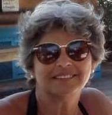
>>Clique na imagem
para ver as suas obras<<
|
TELMA LATUF
Artista Plástica,
1949 - 00 de abcdefg: Nasce em Morretes - PR.
Filha de
C
D
I
L
|
|
|
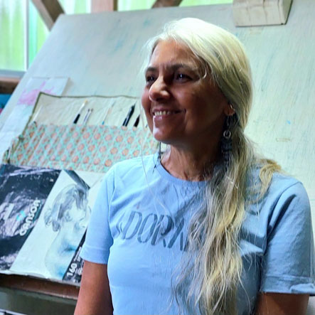
>>Clique na imagem
para ver as suas obras<<
|
ISAURINA MARIA VALÉRIO AQUINO DA SILVA
Artista Plástica, Ilustradora Científica
1960 - 12 de fevereiro: Nasce em Natal - RN.
Filha de Altino Valério e Raimunda Augusta de Souza Valério
Conhecida em Morretes como Sarika.
Desde 1989 em Morretes/PR, nos pés da belíssima cadeia de montanhas do Marumbi, onde observa e retrata a delicadeza da Floresta Atlântica.
Iniciou-se na arte e na ilustraçao científica na galeria de artes Mirtilo Trombini (hoje instituto, em Morretes), com instruções da artista plástica e ilustradora científica, professora Diana Carneiro.
Logo ganha destaque e entra para o centro de ilustração científica do Paraná (CIBP).
- Participou de várias exposições com o CIBP.
- Várias exposições fora do Brasil .
- Exposição na COP8_MOP3, Curitiba/PR.
- Participa de vários livros, inclusive o FLORESTA ATLÂNTICA , do fotógrafo Carlos Fernandes, exposta no museu Oscar Niemeyer.
- Atualmente participa do grupo Novos Caiçaras.
|
|
|
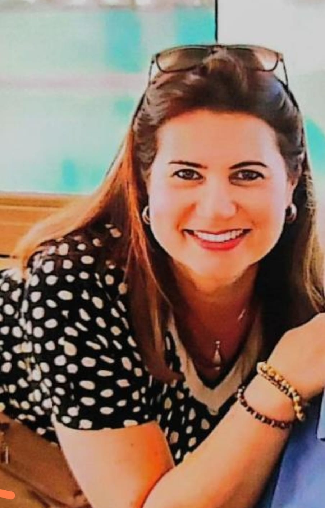
>>Clique na imagem
para ver as suas obras<<
|
DENISE FREY ROMANETTO
Desenhista, Artista Plástica
1966 - 04 de agosto: Nasce em Rio de Janeiro - RJ.
Filha de Willy Frey e Maria Theresa da Rocha Frey
Meu envolvimento com as artes começou em 2003, em Morretes, como aluna da professora Sarika, depois com o professor Daniel Conrade. Apaixonados pelo hiperrealismo com grafite e óleo sobre tela, dividiram comigo seus conhecimentos e juntos participamos de algumas exposições.
A arte traz alegria, ocupa a mente e nos traz amigos com a mesma paixão!
Vídeo Arte Fotos e Artes de Daniel William Conrade:
https://youtu.be/e4GkUvFkWL0?si=wl2ji_1sDoQMZ-Wl |
|
|
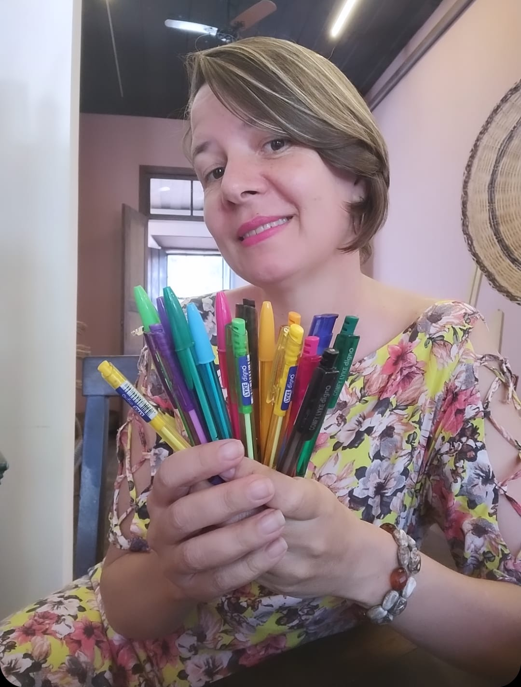
>>Clique na imagem
para ver as suas obras<<
|
MARIA LÚCIA BENDASOLI
Desenhista, Ilustradora.
1973 - 14 de setembro: Nasce em Cornélio Procópio - PR
Filha de Manoel Bendasoli e Laide Rodrigues Bendasoli
Quando cheguei a Morretes tinha apenas 12 anos e desde então já me encantei com a fauna e flora, na primeira oportunidade na Galeria de Artes Mirtillo Trombini, dei início as aulas de desenho e pintura com o professor Eros, sempre registrando pássaros e plantas da região, em aquarela, acrílica e esferográfica.
Participei de várias exposições
Fiz ilustrações para alguns livros e, em 2007, ganhei Mérito de Honra, na exposição de Mostras de Marinha em Paranaguá.
|
|
|
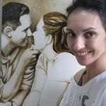
>>Clique na imagem para
ver as suas obras<< |
LUCIMARA WESOLOWICZ GRASSMAN
Licenciada em Artes, Professora de Artes, Desenhista, Artista Plástica,
Calígrafa
1981 - DIA de MÊS: Nasce em Curitiba-PR.
Filha de...
Aos seis anos de idade passou a residir em Morretes, cidade de muita beleza e, berço
de grandes e inspiradores artistas.
Casada, mãe de dois filhos, dedicou parte de seu tempo com algo que transformou
em vocação: Interpretar com traços e cores pessoas, objetos e a natureza.
Sua paixão por artes a levou estudar na ¨Galeria de Artes Mirtillo Trombini¨,
em Morretes, onde aprendeu técnicas de desenho e pintura com artistas
formados pela ¨Belas Artes¨, e aulas de Botânica com a renomada artista
Isaurina Maria.
Por intermédio da instituição chegou a Escola de Musica e Belas Artes
do Paraná (EMBAP), tradicional faculdade de Artes em Curitiba.
Formada desde 2010, licenciada em Artes, vem dividindo seu conhecimento
nas áreas de desenho e caligrafia artística e também como professora de
Artes na APAE de Morretes.
|
|
|
>>Clique
na imagem para ver as suas obras<< |
ANDRÉSS DA SILVA
Desenhista, Artista Plástica, Calígrafa
1983 - 27 de agosto: Nasce em Morretes.
Filha de Vilson da Silva e Eliane Rocio Gomes
Nasci em Morretes, sou morretense. Quando era criança via o meu vizinho desenhar, curiosa que sempre fui, comecei a rabiscar às paredes de casa; quando tinha 12 anos descobri que desenhava. Em um papel que tinha um cartão de aniversario da Minnie, que era pequeno e aumentei e fiquei feliz de descobrir que desenhava. Tenho até hoje esse desenho guardado e outros que fiz. Em 2000 ou 2001 me convidaram para ir na galeria Mirtillo Trombini, eu já tinha 19 anos. Não lembro direito o ano que entrei na galeria, mas fiquei encantada em aprender a desenhar com a professora Sarika, nossa... que aprendizado, sentia-me tão bem nas aulas para aprender cada vez mais.
Saudades, vieram outros professores da faculdade de Belas Artes, lembro-me da Daniele e mais um professor; foi bom demais essas aulas. O senhor Mirtillo com sua esposa amavam nos ver desenhar, ele era muito simpático e carismático.
Fiquei na galeria até 2008, pois tive que sair para trabalhar.
Atualmente desenho em grafite, em aquarela e em tinta a óleo; agora tenho curso de caligrafia.
Ainda não fiz uma faculdades de Artes. |
|
|
|
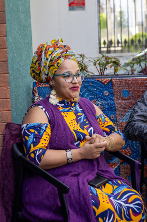
>>Clique na imagem
para ver as suas obras<<
|
KAMYLLA PAOLA DOS SANTOS
Musicoterapeuta, Dramaturga, Produtora Cultural, Artista da Cena e da Música
1989 - 15 de março - Nasce em...
Filha de...
Kamylla dos Santos, mulher amefricana,
é Idealizadora do Grupo Baquetá que, desde 2009, desenvolve espetáculos
e oficinas com base nos saberes africanos, afro-brasileiros e dos povos
indígenas do Brasil.
É mãe, dramaturga, produtora cultural, artista da cena e da música.
Bacharel em Musicoterapia pela Faculdade de Artes do Paraná e atriz pela
Escola Técnica da UFPR. Foi atriz e musicista da Cia Os Crespos em São
Paulo em 2016. Produziu e dirigiu os sete espetáculos do Grupo Baquetá.
Em 2021 e 2020 foi atriz premiada no Concurso Prêmio Palmares De Arte
e no Prêmio Funarte RespirArte – Eixo Teatro, com histórias africanas.
Foi contemplada com o Prêmio Técnicos e Técnicas da Cultura Do Paraná
como produtora afro paranaense e com o Prêmio Memorial de Vivências, como
fazedora de cultura do eixo Cultura Afro e Matriz Africana
|
|
|
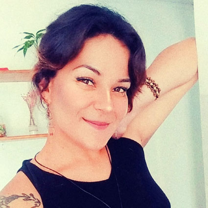
>>Clique na imagem
para ver as suas obras<<
|
GIÓRGIA AZEREDO
Pintora, Arte Educadora, Guia de Turismo Aventura
1993 - DIA do MÊS - Nasce em Morretes.
Filha de...
Possui graduação em licenciatura em Artes pela Universidade Federal do Paraná, sua trajetória nas artes visuais vai alem da academia, já estudou com as artistas Diana Carneiro e Fátima Zagomel, pioneiras na ilustração cientifica botânica, Isaurina Maria, a Sarika, também foi uma grande professora de longa data, onde pode se aperfeiçoar em técnicas de grafite e pintura a óleo. Atualmente, trabalha como pintora, ilustradora, pesquisadora e Arte educadora em seu próprio ateliê, localizado em Morretes - PR.
Também trabalha como guia de turismo aventura, com atividades ao ar livre na natureza em meio a mata atlântica, que acredita ser fonte inspiradora para a produção de seus trabalhos.
Suas pinturas costumam representar os animais, as plantas e também a cultura e biodiversidade local; alem de superfícies como tela e papel, costuma reutilizar arvores que estão caídas, transformando-as em cortes como “bolachas” de madeira para as suas pinturas. |
|
|
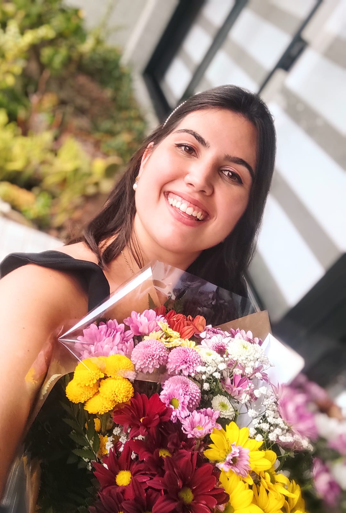
>>Clique
na imagem para ver as suas obras<< |
CAROLINA FREY ROMANETO
Desenhista, Artista Plástica, Adestradora de Cães.
1997 - 14 de janeiro: - Nasce em Curitiba - PR
Filha de Ricardo Romanetto e
Denise da Rocha Frey Romanetto
Meu nome é Carolina, tenho 26 anos e desde pequena gostava de artes.
Desenhava e pintava com grafite, lápis de cor, aquarela, além de brincar com argila e outros materiais.
Quando chegou a pandemia, começamos a fazer aulas de pintura a óleo, novamente, e assim me especializei, pintando encomendas de pets em óleo sobre tela.
Atualmente fico entre Morretes e Curitiba, onde também trabalho com adestramento de cães.
|
|
|
>>Clique
na imagem para ver as suas obras<< |
ALESSANDRA MARCHIORI
Artista, Tatuadora.
1999 - DIA de MÊS: - Nasce em
Filha de...
Me chamo Alessandra Marchiori e sou uma pisciana que ama "inventar arte". Tenho 24 anos de idade e descobri que meu coração estaria no mundo das artes lá quando tinha meus 19 anos, o tempo das descobertas.
A curiosidade e criatividade são meus fios condutores para criar. Amo conhecer e explorar lugares, coisas novas, técnicas, texturas, estilos, mas foi quando peguei um lápis e uma borracha e tempos depois ela, a minha querida máquina de tatuagem que encontrei o que procurava; a paixão de fazer o que eu amo!
O ano de 2023 foi maravilhoso para mim, pois pude me aprofundar no ramo da tattoo, estudos e treinos intensos até que me sentisse preparada para dar o próximo passo, tatuar pessoas! Joguei-me confiante que o universo teria o melhor para mim e sim, ele me surpreendeu positivamente.
Hoje digo com muito orgulho que sou uma tatuadora iniciante, com muito a aprender, mas com brilho nos olhos por fazer algo que me deixa muito feliz. Sinto que a liberdade de criar e transbordar os sentimentos em forma de arte é mais do que prazer, mas um estilo de vida onde se pode viver a vida em sua forma mais real!
|
|
|
|
>>Clique na imagem
para ver as suas obras<<
|
RENATA MENEGOL
Desenhista, Artista Plástica, Tatuadora.
2001 - DIA de MÊS: - Nasce em Morretes
- Paraná, família gaúcha, cresceu no meio da agricultura.
Filha de...
No meio dessa vivência veio a arte, quando na escola os colegas e professores
elogiavam seus desenhos e seu modo de fazer com facilidade, isso até o
último ano na escola, na época a arte era no papel e na parede.
Com certa idade veio as responsabilidades de ter que trabalhar, porém
desde criança quis trabalhar para si; em 2020 veio a pandemia junto a
ela veio seu filho, com a dificuldade de sair pra trabalhar começou na
tatuagem em casa, como envolvia tudo o que gostava de fazer e por estar
ali com seu filho.
Hoje Renata vive da arte, tem seu estúdio de tatuagem bastante movimentado,
tatua em Morretes e pessoas das cidades vizinhas.
Muito grata.
Hoje o lápis virou agulha e a tela virou pele.
|
|
|
|
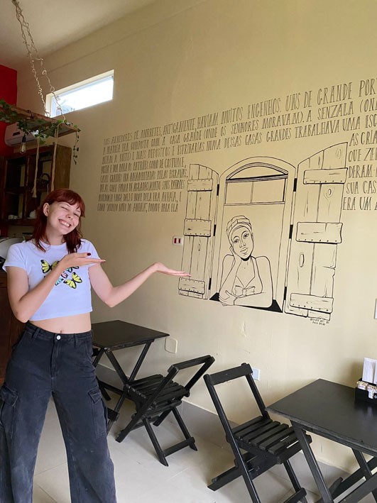
>>Clique na imagem
para ver as suas obras<<
|
JÚLIA PETERSEN DELAY
Desenhista, Artista Plástica
2005 - 03 de janeiro: Nasce em Curitiba - PR.
Filha de
Wilson Alfredo Delay e Marilisa Petersen Delay
Júlia Petersen Delay sempre teve vínculo com Morretes desde que nasceu, pois ambas famílias são de origem morretense.
Começou a desenhar desde nova e sempre com apoio dos familiares.
Na
metade de 2018, seu pai se aposentou e decidiu voltar para Morretes com sua esposa e filha para ter um descanso.
Em
2019, Júlia acabou se interessando ainda mais pela arte, com o apoio de seus pais começou fazendo desenhos da natureza e dos avós.
No
final de 2019, com a morte de seu pai, aos 14 anos Júlia vê na arte um conforto em meio ao luto, conhecendo diversas técnicas e procurando se aperfeiçoar ainda mais.
Vendia
para seus amigos quadros pintados à mão e desenhos, mas, foi em 2023 que a artista descobriu uma grande capacidade de alavancar seus trabalhos, pintando em paredes dos mais diversos formatos.
|
|
|
|
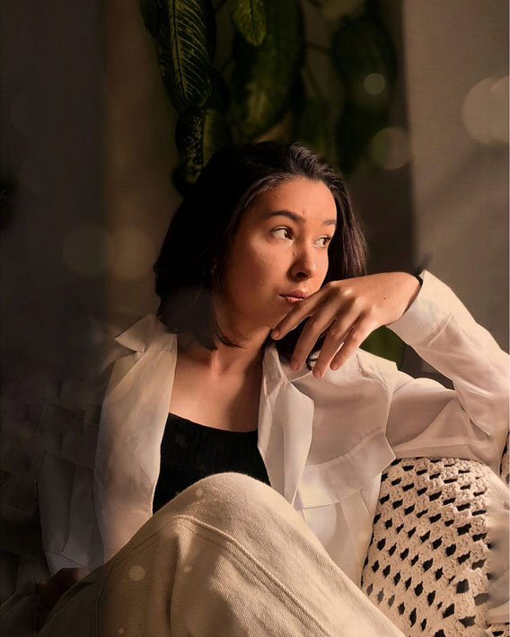
>>Clique na imagem
para ver as suas obras<<
|
MARIA EUNICE RAZERA SILVA
Artista Plástica
2005 - 28de janeiro: Nasce na encantadora cidade de
Morretes, localizada no estado do Paraná.
Filha de...
Sua jornada artística é um testemunho de sua paixão pela arte e o desejo
de explorar as maravilhas culturais que sua terra natal tem a oferecer.
Desde cedo autodidata em suas artes, desenvolveu uma profunda admiração
pela arte em suas diversas formas.
A cidade, com suas paisagens deslumbrantes, a cultura rica e a história
fascinante, despertou uma curiosidade incansável dentro dela. A vontade
de explorar e celebrar as riquezas culturais de Morretes impulsionou-a
a se dedicar à Arte.
Ao longo dos anos, Maria Eunice encontrou inspiração em uma variedade
de artistas notáveis, tanto internacionais quanto locais. Grandes nomes
como Vincent Van Gogh com suas obras de grande expressividade e intensidade
emocional e Leonardo da Vinci, com sua maestria em diferentes formas de
arte, como pintura e arquitetura tiveram uma influência significativa
em sua jornada artística.
Além disso, se inspira em artistas locais que retratam a beleza da Região.
Pintores como Theodoro de Bona, Mirtillo Trombini e até mesmo seus colegas
de desenhos que capturam a essência da cultura de Morretes em suas obras,
Esses grandes artistas têm sido fontes de inspiração constantes.
Numa profunda conexão com a arte e amor pela terra natal, busca expressar
sua criatividade também por meio de várias formas artísticas, como pintura,
desenhos e fotografias.
Preservar e celebrar a cultura, a história e as paisagens de Morretes,é
a sua intenção, compartilhando-as com o mundo.
|
|
|
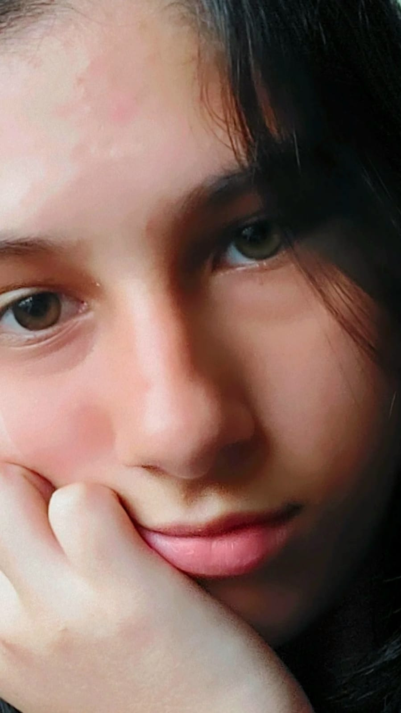
>>Clique
na imagem para ver as suas obras<< |
MELISSA VALÉRIO DA SILVA FERNANDES
Desenhista, Artista Plástica
2008 - 17 de março: Nasce em Morretes - PR
Filha de Valério Aquino da Silva e Paulo Cezar Fernandes.
Eu desenho desde quando era pequena, e sempre me interessei pela arte de muitas formas, mas o desenho tem meu coração.
Comecei desenhando objetos ao meu redor, personagens aleatórios da Internet, e algumas paisagens simples, mas estava insatisfeita com meus resultados, e meu estilo de desenho não me agradava.
Quando completei 11 anos, me aventurei pelo mundo dos “animes”, desenhos japoneses; comecei assistindo uma série chamada “Naruto”, e me apaixonei pelo estilo de desenho.
E assim, comecei a tentar desenhar os personagens de animes, mas não havia a “perfeição” em meus desenhos como eu desejava, então procurei dicas e tutoriais no Youtube para me ajudar, buscando experiência e aprendizado pela Internet para ter aperfeiçoamento.
Explorando vídeos aleatórios, conheci o canal da “Mayara Rodrigues”, uma desenhista incrível, e fiz seu curso online com várias aulas, ensinando como desenhar no estilo dos animes. Aprendi a esboçar, técnicas novas, dicas, e a colorir por meio desse curso, e resolvi mostrar meus desenhos para outras pessoas pelas redes sociais.
Depois dessa experiência comecei a gostar dos meus desenhos, e a me esforçar cada vez mais, sempre com muito apoio de todos e da minha avó, (Isaurina Maria de Souza Valério), que também tem muita influência na minha vida artística.
Atualmente tenho 15 anos, e continuo desenhando animes, me aventurando com outros estilos, e sempre procurando experiências novas com a arte. |
|
|
| >>Clique
na imagem para ver as suas obras<< |
ABCD EFG HIJ KLM NOP
Abcd, Efg, Hij, Klm, Nop
0000 - 00 de MÊS: Nasce em Morretes - PR.
A |
|
|
| >>Clique
na imagem para ver as suas obras<< |
ABCD EFG HIJ KLM NOP
Abcd, Efg, Hij, Klm, Nop
0000 - 00 de MÊS: Nasce em Morretes - PR.
A |
|
|
| >>Clique
na imagem para ver as suas obras<< |
ABCD EFG HIJ KLM NOP
Abcd, Efg, Hij, Klm, Nop
0000 - 00 de MÊS: Nasce em Morretes - PR.
A |
|
|
| >>Clique
na imagem para ver as suas obras<< |
ABCD EFG HIJ KLM NOP
Abcd, Efg, Hij, Klm, Nop
0000 - 00 de MÊS: Nasce em Morretes - PR.
A |
|
|
| >>Clique
na imagem para ver as suas obras<< |
ABCD EFG HIJ KLM NOP
Abcd, Efg, Hij, Klm, Nop
0000 - 00 de MÊS: Nasce em Morretes - PR.
A |
|
|
| >>Clique
na imagem para ver as suas obras<< |
ABCD EFG HIJ KLM NOP
Abcd, Efg, Hij, Klm, Nop
0000 - 00 de MÊS: Nasce em Morretes - PR.
A |
|
|
| >>Clique
na imagem para ver as suas obras<< |
ABCD EFG HIJ KLM NOP
Abcd, Efg, Hij, Klm, Nop
0000 - 00 de MÊS: Nasce em Morretes - PR.
A |
|
|
| >>Clique
na imagem para ver as suas obras<< |
ABCD EFG HIJ KLM NOP
Abcd, Efg, Hij, Klm, Nop
0000 - 00 de MÊS: Nasce em Morretes - PR.
A |
|
|